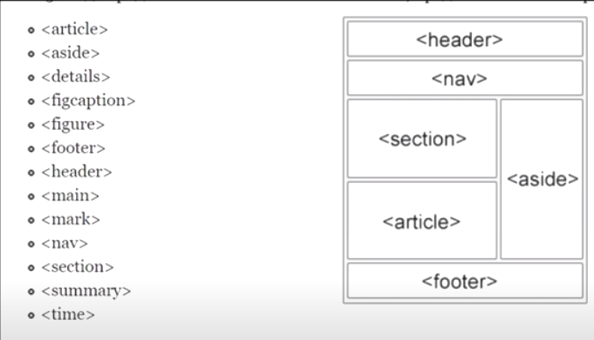
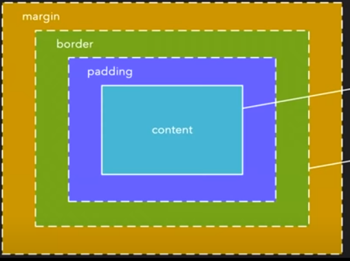
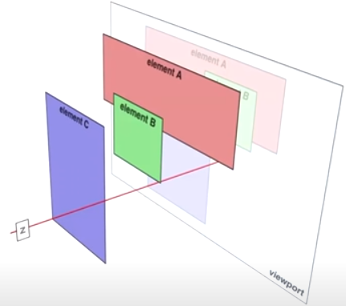
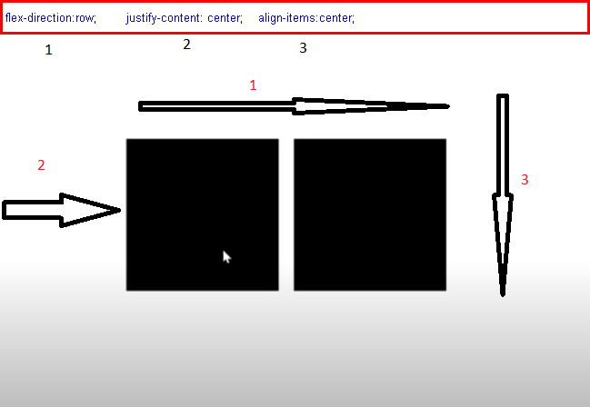

@keyframes rotate {
from{
transform: rotateX(0deg);
}
to
{transform: rotateX(569deg);}
}
Основные свойства: block; inline-block; flex; inline; grid
для таблицы display:table; table-row; table-cell;table-caption; table-column-group; table-column;
table-row-group; table-header-group; table-footer-group;
Если углубляться еще дальше, то свойство display отвечает за 2 вещи:
1) Внешний тип отображение - какой бокс будет отрисован в нормальном потоке документа.
Всего тут есть два варианта: блочный (block, table, flex, grid и т.д.),
либо строчный (inline-block, inline-table, inline-flex, inline-grid и т.д.). Либо не отрисован вовсе (contents, none)
2) Внутренний контекст элемента - раскладка для дочерних элементов. Изначально она у всех flow - нормальный поток.
И соответственно у table - табличный макет, у flex - гибкий макет, у grid - сеточный и т.д.
keyframes определяет ключевые кадры по которым будет работать анимация
@keyframes rotate {
from{
transform: rotateX(0deg);
}
to
{transform: rotateX(569deg);}
}
.squer {width: 100px;
height: 100px;
background-color: grey;
margin: 100px;
animation: rotate 1s infinite;}
position:
absolute позируется относительно ближайщего спозицианированного элемента
fixed элемент закрепляется на экране и прокручивается вместе со страницей
sticky наподобее fixed но предназначен для закрепления внутри блока
body{
display: flex;
justify-content: center;
align-items: center;}
БЭМ метадлология которая расшифровывается блок элемент модификатор, которая пропагандирует компанентный процесс веб разработки. В его основе лежжит прицип разделения интерфейса на независемые блоки, которые можно повторно ипользовать без копи паста
Семантические теги определяют конкретные части страницы.Используют для лучшей индексации страницы
Виды напрвлений: flex-direction: row; flex-direction: row-reverse; flex-direction: column; flex-direction: column-reverse;
Pазмер элемента строится из васоты, ширины элемента, внутренних отступов, рамки и внешних отступов
z-index влияет только на позиционированные элементы
justify-content влияет на расположение относительно главой оси flex-direction
параметры justify-content: center; space-between ; space-around; flex-start; flex-end;
align-tiems влияет на расположение относительно второстепенной оси. Параметры align-items: baseline; center; flex-end; flex-start; stretch;
ul{list-style: none;}
варианты circle; disc; decimal; upper-roman; итд
| Вид селектора | Приоритет |
|---|---|
| Селектор тега | 1 |
| Селектор класса | 10 |
| Селектор Id | 100 |
| Inline style | 1000 |
Псевдоклассы предназначенны для описания характеристик элементов такое, как динамическое состояние например нажатая ссылка
самые часто используемые hover checked disabled
background-size:cover- сохраняет пропорции но изменяется в размере чтобы уместитья в блок(часть изображения может обрезаться)
background-size:contain - ужимает картинку до тех пор пока она не вместится в блок, если картинка будет прямоугольная а блок квадратный
нужно буде написать background-repeat: no-repeat;
background-size: 30%; обычный размер
::after ; ::first-letter ::backdrop; ::first-line ::before; ::file-selector-button ::cue ; ::grammar-error Experimental ::cue-region; ::marker ::part(); ::slotted() ::placeholder; ::spelling-error Experimental ::selection; ::target-text Experimental
button{width: 100px;height: 100px; transition: 1s all;} для плавности используем transition: 1s all;
.btn:hover{transform: scale(1.5);-увеличиваем в 1.5 раза
.q35p:hover::after{
content: attr(data-desc);
background-color: lightgrey;
position: relative;
top:16px;
right: 50px;}
Они предназначенны для хранения каких-либо значений, например для создания всплывающих подсказок без применения js.
Cинтаксис: data-name (name Это название этой переменной вместо name может быть что угодно) пример:
"div data-description="какое-то описание"> "/div>
Все манипуляции производим через добавление label
html
input id="iq36" type="file" name="" value="">
label for="iq36">нажмите для загрузки< /label>
css
.inpq36 input{display: none;}
.inpq36 label{
text-align: center;
width: 80px;
height:80px;
background-color: green;
display: block;}
Нужно просто воспользоваться селектором атрибута :
html: button disabled>just button< /button>
css: .btnq38 button[disabled]{background-color: pink; }
css: .sq39 input + span{color:red; font-size: 30px;}
html: div class="sq39">
input type="text" name="" value="">
span>Some text< /span> < /div>
Some text
За поворот отвечает transform: rotate(); для того чтобы в двумерном пространстве были видны измененеия используем transform: rotateZ(45deg);
помимо этого есть rotateX(); rotateY();
padding: 10px;
margin: 50px;
width: 200px;
height: 200px;
background-color: blue;
transform: rotateZ(45deg)
Сделаем вращение начинающееся при наведении мышки
Для этого у родителяя надо указать глубину:
perspective: 200px;
Тот контенер который мыхотим вращать :
.rot45{
width: 100px;
height: 100px;
background-color: blue;
transition: 1s all;
}
.rot45:hover{
transform: rotateY(90deg);
Препроцессоры расширяют возможности стандартного css с помощью новых синтаксических конструкций
таких как переменные, вложенность миксины и многое другое
Это некий кусок css который можно переиспользывать в каких-то других селекторах